Code
library(dagitty) # R implementation of http://www.dagitty.netWarning: package 'dagitty' was built under R version 4.4.3Load R-libraries
library(dagitty) # R implementation of http://www.dagitty.netWarning: package 'dagitty' was built under R version 4.4.3Theoretical articles to read:
Here a lsit of some errors, fallacies, and paradoxes
| Random fluctuation | Reversed causation | Confounding | Selection |
|---|---|---|---|
| Sampling error | Recall bias | Simpson I | Simpson II (overadjustment bias) |
| Regression fallacy | Early disease onset | Ecological fallacy | Collider bias (Berkson error) |
| Small sample fallacy | Diagnosis changes risk behavior | Mono-method bias | Attrition bias |
Regression fallacy: Regression to the mean interpreted as a causal effect.
Remember: A flurry of deaths by natural causes in a village led to speculation about some new and unusual threat. A group of priests attributed the problem to the sacrilege of allowing women to attend funerals, formerly a forbidden practice. The remedy was a decree that barred women from funerals in the area. The decree was quickly enforced, and the rash of unusual deaths subsided. This proves that the priests were correct.
Funnel plot
set.seed(123)
# Sample sizes
nn <- sample(10:1000, size = 250, replace = TRUE) # Random uniform
# Outcome
x <- sapply(nn, function(x) mean(rnorm(x))) # True effect = 0
# n for small effect sizes
largest_neg <- nn[x == min(x)] # Sample size in study with smallest effect size
large_neg <- nn[x < -0.2] # Sample sizes in studies with largest negative effect sizes
# n for large effect sizes
largest_pos <- nn[x == max(x)] # Sample size in study with largest effect size
large_pos <- nn[x > 0.2] # Sample sizes in studies with largest psoitive effect sizes
# Historgam of sampel sizes
# hist(nn)
# Funnel plot
plot(x, nn, xlim = c(-0.5, 0.5), ylab = "Study size", xlab = "Outcome")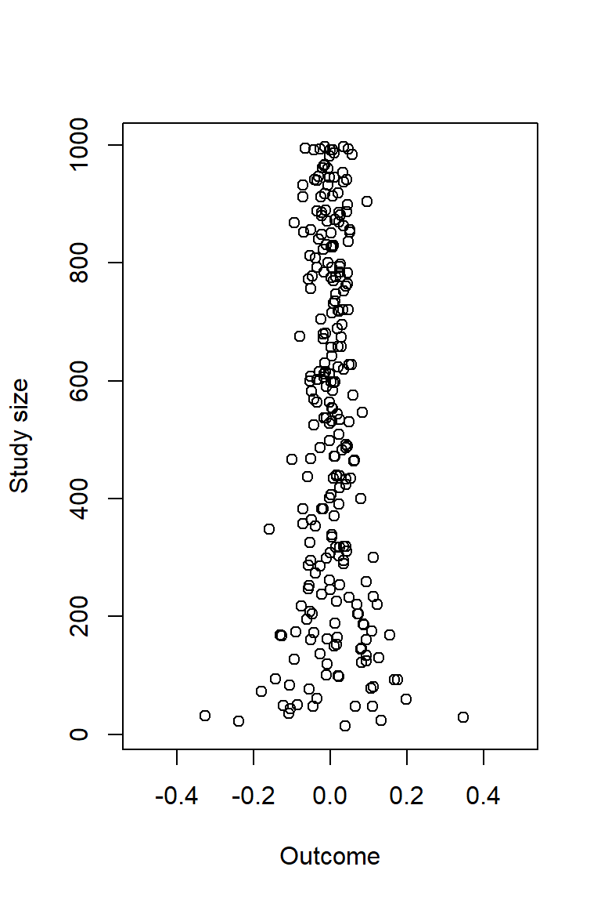
# Sampel sizes in studies with large effect sizes
largest_neg [1] 32large_pos[1] 29library(dagitty) # R version of http://www.dagitty.net
pizza <- dagitty( "dag {
Pizza -> Pizza_recall
CVD -> Pizza_recall
}")
coordinates(pizza) <- list(
x = c(Pizza = 1, Pizza_recall = 2, CVD = 4),
y = c(Pizza = 1, Pizza_recall = 0, CVD = 1))
plot(pizza)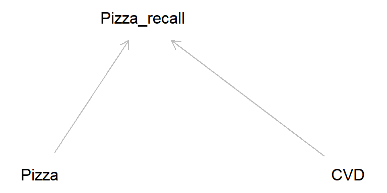
In the early 2000s, there was considerable publicity arising from a claim that the measles, mumps and rubella (MMR) vaccine was related to and possibly caused autism in children (the originating claim was subsequently found to be based on fraudulent data and the publication was withdrawn) (Andrews 2002). Researchers found that parents of autistic children diagnosed after the publicity tended to recall the start of autism as being soon after the MMR jab more often than parents of similar children who were diagnosed prior to the publicity. Source: Catalog of bias
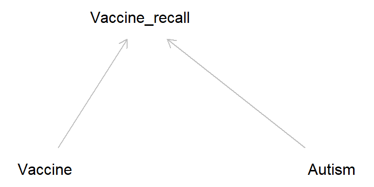
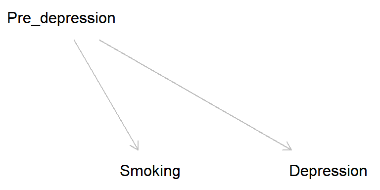
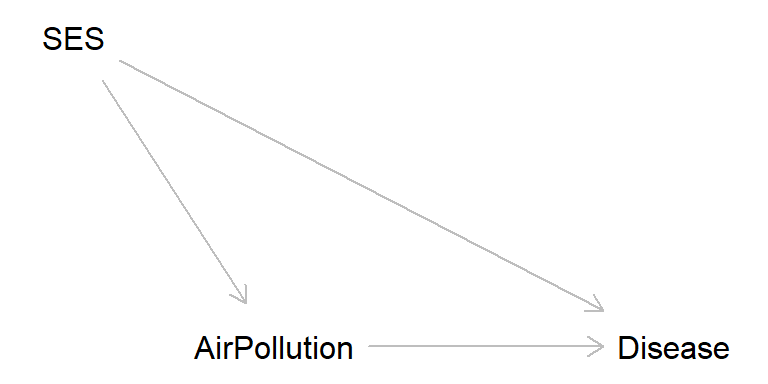
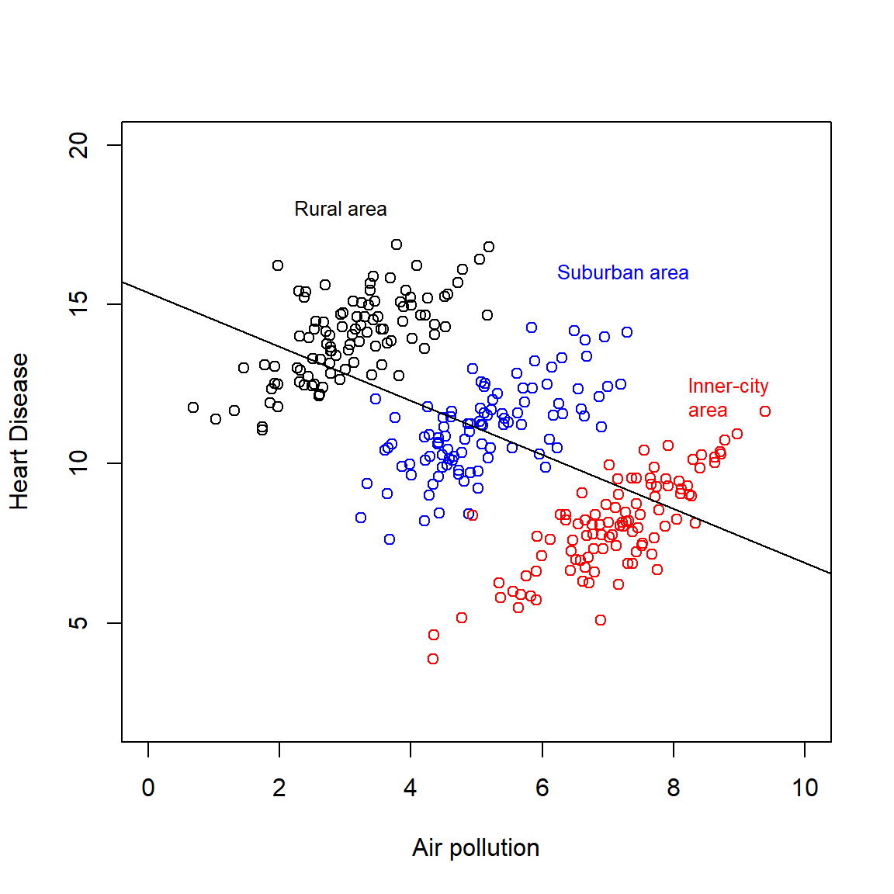
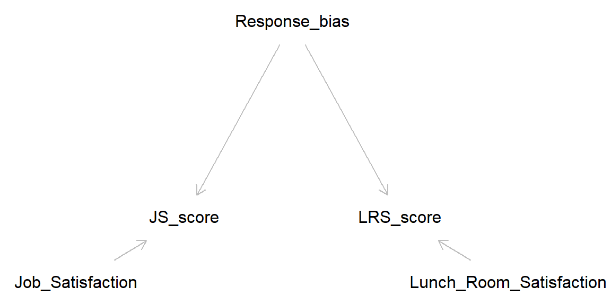
Latent variables (unmeasured): Job_Satisfaction, Lunch_Room_Satisfaction, Response bias
Manifest variables (measured): JS_score, LRS_score
To aggregate or disaggregate, that is the question! Causal inference need assumptions (a casual story), data is not enough.
A demonstration of the paradox “… comes from the field of law and concerns the influence of race on death sentences in the US. One paper showed the death sentence rate versus race of the offender, stratified by race of the victim, for a number of states. The tables for the state of Indiana reveal Simpson’s paradox (Table 3). In Indiana whites are nearly twice as likely to receive the death penalty as African-Americans. However, when the data are stratified by the race of the victim, it is African-Americans who have the higher death sentence rate. This occurs both when the victim is white and when the victim is African-American.” (Norton & Divine, 2015)
Exercise: Draw DAG consistent with the table below.
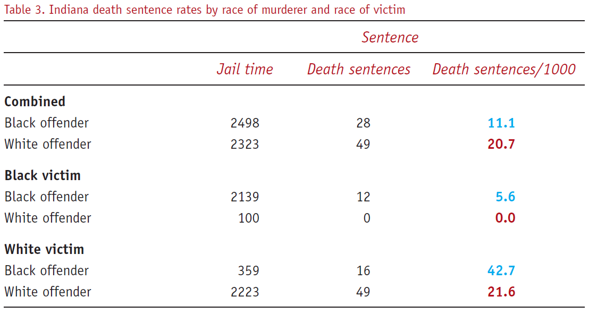
And again: Draw DAG consistent with the table below.
Story: “Suppose (hypothetical) data are analysed to determine whether a new treatment (A) is superior to the standard treatment (B) for septic shock. The combined data show that the proportion surviving to hospital discharge is 86% with treatment A, but only 70% with treatment B. However, if the patients are stratified into two subgroups, depending on whether their diastolic blood pressure (DBP) is less than 50 mmHg, within each stratum (Table 4) the proportions of patients alive at hospital discharge are identical for each treatment.” Norton & Divine (2015)
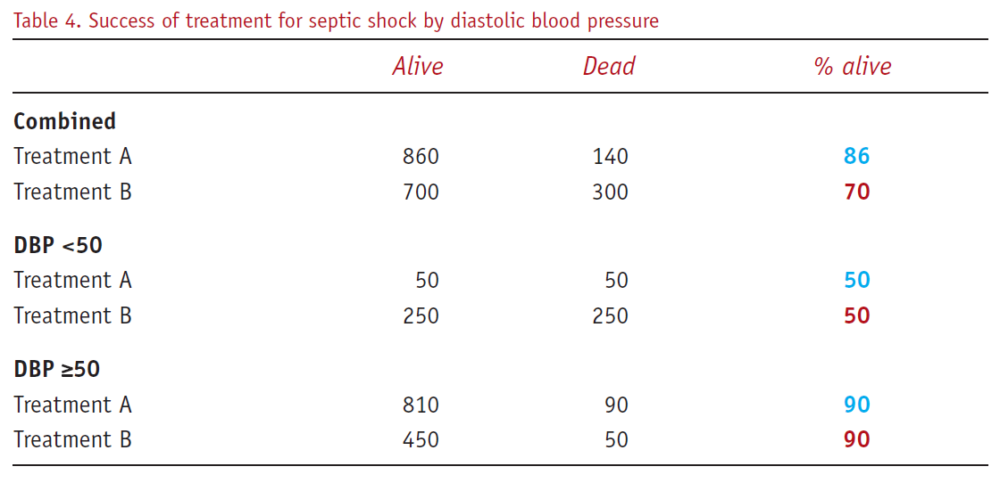
cf. Pearl (2014), Fig 1:
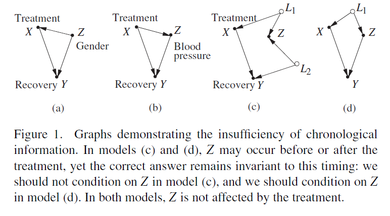
# Code taken from http://www.dagitty.net/learn/simpson/index.html
simpson.simulator <- function(N,s,ce){
Z1 <- rnorm(N,0,s)
Z3 <- rnorm(N,0,s) + Z1
Z5 <- rnorm(N,0,s) + Z3
U <- rnorm(N,0,s) + Z1
Z4 <- rnorm(N,0,s) + Z5 + U
Z2 <- rnorm(N,0,s) + Z3 + U
X <- rnorm(N,0,s) + U
Y <- rnorm(N,0,s) + ce*X + 10*Z5
data.frame(Y,X,Z1,Z2,Z3,Z4,Z5)
}
# 1st parameter: sample size
# 2nd parameter: noise standard deviation
# 3rd parameter: true causal effect
D <- simpson.simulator(1000,0.1,1)
# adjusted for {Z1, Z2}
m <- lm(D[,c(1,2,3, 4)])
summary(m)
Call:
lm(formula = D[, c(1, 2, 3, 4)])
Residuals:
Min 1Q Median 3Q Max
-4.1176 -0.8536 -0.0530 0.7925 5.0937
Coefficients:
Estimate Std. Error t value Pr(>|t|)
(Intercept) -0.004531 0.041454 -0.109 0.91298
X -1.046319 0.332368 -3.148 0.00169 **
Z1 4.051204 0.664769 6.094 1.57e-09 ***
Z2 4.045906 0.259529 15.589 < 2e-16 ***
---
Signif. codes: 0 '***' 0.001 '**' 0.01 '*' 0.05 '.' 0.1 ' ' 1
Residual standard error: 1.31 on 996 degrees of freedom
Multiple R-squared: 0.5024, Adjusted R-squared: 0.5009
F-statistic: 335.1 on 3 and 996 DF, p-value: < 2.2e-16confint(m,'X') 2.5 % 97.5 %
X -1.698541 -0.3940963Obesity DAG (cf. Fig. 1, Banack & Kaufman, 2014)
library(dagitty) # R version of http://www.dagitty.net
obesity_dag <- dagitty( "dag {
Obesity -> CVD -> Mortality
Obesity -> Mortality
CVD <- U -> Mortality
}")
coordinates(obesity_dag) <- list(
x = c(Obesity = 1, CVD = 3, Mortality = 5, U = 4),
y = c(Obesity = 2.5, CVD = 2, Mortality = 2, U = 1))
plot(obesity_dag)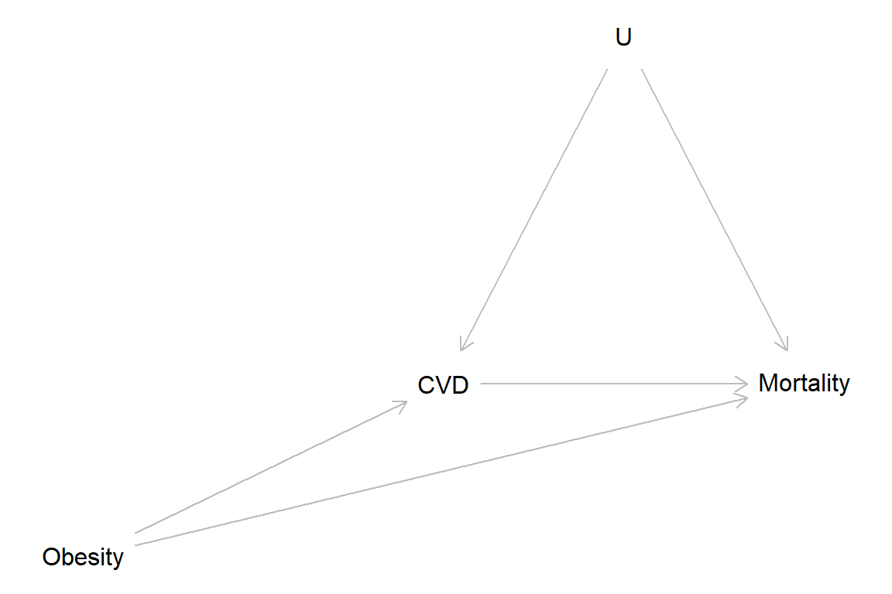
CVD = Cardiovascular disease, U = unmeasured factor(S)
Simulation from Banack & Kaufman, 2014
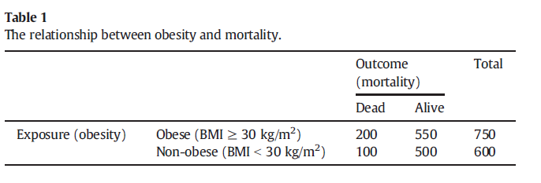 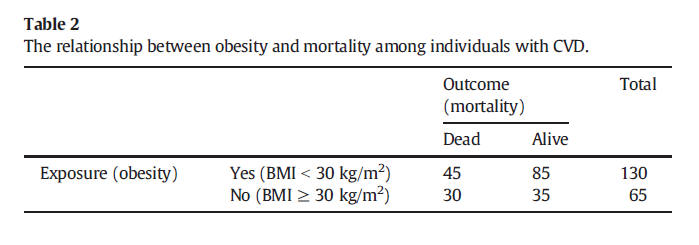  NB! 615 should be 620
NB! 615 should be 620
Baron & Kenny (1986) The moderator-mediator variable distinction in social psychological research: Conceptual, strategic, and statistical considerations. Journal of Personality and Social Psychology, 51, 1173-1182.
Google scholar 2021-12-02: 100,000+ citations!
plot(0, pch = "", axes = FALSE, xlab = "", ylab = "",
xlim = c(0, 100), ylim = c(0, 100))
# Upper fig
text(x = 40, y = 100, "Total causal effect of X on Y = c", col = "blue", cex = 0.8)
points(0, 85, pch = "X")
arrows(x0 = 3, x1 = 87, y0 = 85, y1 = 85, length = 0.1)
points(90, 85, pch = "Y")
points(40, 90, pch = "c")
# Lower fig
points(0, 0, pch = "X")
arrows(x0 = 3, x1 = 87, y0 = 0, y1 = 0, length = 0.1)
points(90, 0, pch = "Y")
text(40, 6, "c'")
text(20, 20, "a")
text(60, 22, "b")
points(40, 30, pch = "M")
arrows(x0 = 3, x1 = 37, y0 = 0, y1 = 26, length = 0.1)
arrows(x0 = 43, x1 = 87, y0 = 26, y1 = 2, length = 0.1)
text(x = 40, y = 55, "Direct causal effect of X on Y = c'",
col = "blue", cex = 0.8)
text(x = 40, y = 48, "Indirect causal effect of X on Y = ab",
col = "blue", cex = 0.8)
text(x = 40, y = 40, "ab + c = c'", col = "blue", cex = 0.8) 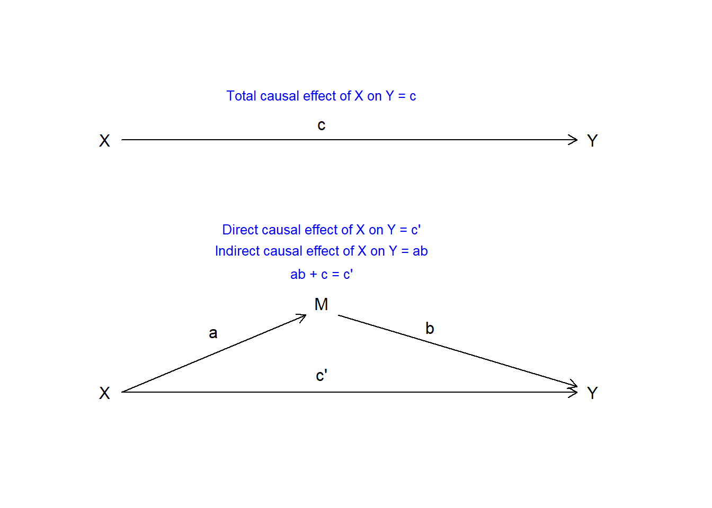
General idea of Baron & Kenny (1986):
Why mediation analysis is not simple:
Collider bias is a threat, and that is why the standard approach of Baron & Kenny (1986) is invalid in many scenarios.
See Elwert & Winship (2014), Fig. 11.
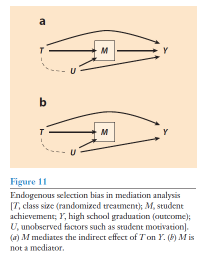
The practice problems are labeled Easy (E), Medium (M), and Hard (H), (as in McElreath (2020)).
15E1. Revisit the find-an-alternative-explanation questions labeled Easy in Chapter 1, and answer them again, if applicable with reference to the Potential outcome model, Directed Cyclical Graphs, and data simulations to elaborate on your earlier answers.
15E2. Simpson’s paradox comes in two versions, leading to the question of whether to look for the truth in the aggregated or disaggregated data. Explain.
15E3. Here is more on Simpson’s paradox:
A large data set on smoking and mortality included data from women born between 1910 and 1960. Surprisingly, the proportion of women that had died before year 2010 was lower among smokers than among non-smoker, suggesting a protective effect of smoking. However, when adjusting for age the opposite result was found.
15E4. Explain the following terms in your own words with simple examples:
15E5.
(a) Reverse causation can often be viewed as a form of confounding. Explain with an example.
You may use Directed Acyclic Graphs (DAGs) to support your explanation.
15M1. Revisit the find-an-alternative-explanation questions labeled Medium in Chapter 1, and answer them again, if applicable with reference to the Potential outcome model, Directed Cyclical Graphs, and data simulations to elaborate on your earlier answers.
15M2. In this Directed Acyclical Graph, X is the exposure, Y is the outcome, Z1, Z2, and Z3 are observed covariates, and U1 and U2 are unmeasured (unknown) variables. Explain why it would not be possible to identify the total average causal effect of X on Y, i.e. why it would not be possible to estimate it from observable population data.
library(dagitty)
my_dag <- dagitty( “dag { X -> Y X -> Z1 -> Y Z1 -> Z2 X <- U2 -> Z3 -> Y Z3 <- U1 -> Y }”)
coordinates(my_dag) <- list( x = c(X = 1, U2 = 1, Z2 = 2, Z1 = 3, Z3 = 3, U1 = 4, Y = 4), y = c(X = 5, U2 = 1, Z2 = 3, Z1 = 4, Z3 = 2, U1 = 1, Y = 5))
plot(my_dag)
15H1. Revisit the find-an-alternative-explanation questions labeled Hard in Chapter 1, and answer them again, if applicable with reference to the Potential outcome model, Directed Cyclical Graphs, and data simulations to elaborate on your earlier answers.
15H2. Wilson & Rule (2015) studied facial trustworthiness and risk for being sentenced to death among convicts in Florida.
They describe an alternative explanation of their hypothesis that perceived trustworthiness may lower risk for capital punishment: “Perhaps individuals who look less trustworthy commit their crimes in a more heinous manner and are thus more culpable”. Clarify by drawing a DAG of their main hypothesis and one for the alternative explanation, and briefly explain how they dealt with the alternative explanation in their study.
Another concern is that maybe time on death row may make you look less trustworthy. Clarify by drawing a DAG, and briefly explain how they dealt with this alternative explanation in their study.
Reference:
Wilson, J. P., & Rule, N. O. (2015). Facial trustworthiness predicts extreme criminal-sentencing outcomes. Psychological Science, 26(8), 1325–1331. doi.org/10.1177/0956797615590992
sessionInfo()R version 4.4.2 (2024-10-31 ucrt)
Platform: x86_64-w64-mingw32/x64
Running under: Windows 11 x64 (build 26100)
Matrix products: default
locale:
[1] LC_COLLATE=Swedish_Sweden.utf8 LC_CTYPE=Swedish_Sweden.utf8
[3] LC_MONETARY=Swedish_Sweden.utf8 LC_NUMERIC=C
[5] LC_TIME=Swedish_Sweden.utf8
time zone: Europe/Stockholm
tzcode source: internal
attached base packages:
[1] stats graphics grDevices utils datasets methods base
other attached packages:
[1] dagitty_0.3-4
loaded via a namespace (and not attached):
[1] digest_0.6.37 fastmap_1.2.0 xfun_0.52 knitr_1.50
[5] htmltools_0.5.8.1 rmarkdown_2.29 cli_3.6.5 compiler_4.4.2
[9] boot_1.3-31 rstudioapi_0.17.1 tools_4.4.2 curl_6.4.0
[13] evaluate_1.0.3 Rcpp_1.0.14 yaml_2.3.10 rlang_1.1.6
[17] jsonlite_2.0.0 V8_6.0.4 htmlwidgets_1.6.4 MASS_7.3-61